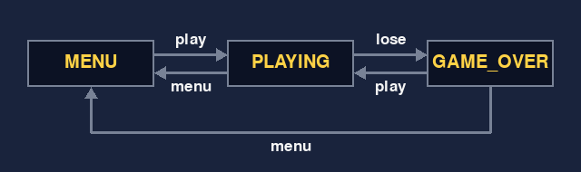
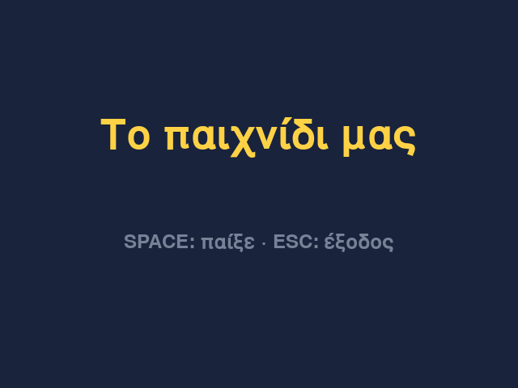
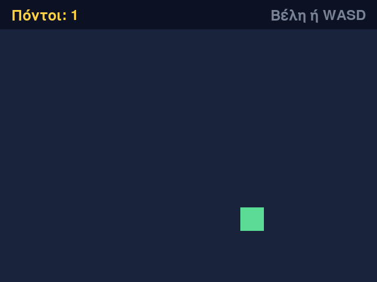
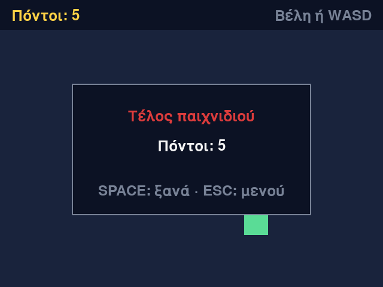

Μάθημα 14: Project (1/2): από την ιδέα στο πρωτότυπο¶
Project: ένα δικό σου παιχνίδι, φτιαγμένο σε ζεύγος· σε αυτό το μάθημα φτάνεις από την ιδέα μέχρι ένα πρωτότυπο που παίζεται και έχει έναν βασικό κανόνα
Διάρκεια: 4 κύκλοι × (περίπου 45′ εργασία + 15′ διάλειμμα)
Φύλλο εργασίας
Αυτή η σελίδα εξηγεί πώς δουλεύουμε. Οι οδηγίες και τα παραδοτέα κάθε κύκλου βρίσκονται στο Φύλλο εργασίας 14. Δούλεψε με τις δύο σελίδες ανοιχτές.
Αρχεία εργαστηρίου¶
| Αρχείο | Τι κάνεις μαζί του |
|---|---|
| game.py | το πρότυπο του παιχνιδιού: τρέχει όπως είναι και το αλλάζεις κομμάτι κομμάτι |
| logic.py | οι καταστάσεις και οι μικρές συναρτήσεις χωρίς pygame: εδώ μπαίνουν οι κανόνες σας |
| check_logic.py | ο πίνακας με τα παραδείγματα που ελέγχουν το logic.py |
| check_project.py | ο αυτοέλεγχος του project: τον τρέχεις και σου λέει τι λείπει |
Κατέβασε και τα τέσσερα αρχεία στον ίδιο φάκελο: τον φάκελο του project σας. Σήμερα δεν χρειάζονται εικόνες ούτε ήχοι.
Η αποστολή¶
Μέχρι τώρα κάθε μάθημα σου έδινε το παιχνίδι, τα στάδια και τα κενά. Σε αυτό το μάθημα και στο επόμενο φτιάχνεις το δικό σου παιχνίδι, μαζί με έναν συμμαθητή. Η ιδέα είναι δική σας. Ό,τι χρειάζεται για να τη φτιάξετε το έχετε ήδη δει στα Μαθήματα 1–13.
Δεν ξεκινάτε από κενό αρχείο. Ξεκινάτε από ένα πρότυπο που τρέχει από την πρώτη στιγμή: ένα μενού, ένα τετράγωνο που κινείται και μια οθόνη τέλους. Το αλλάζετε κομμάτι κομμάτι, ώσπου να γίνει το παιχνίδι σας. Σε κάθε αλλαγή ξέρετε αν χαλάσατε κάτι, γιατί το πρότυπο έχει αυτοελέγχους.
Ένα παιχνίδι φτιάχνεται σε τέσσερα βήματα: σχεδιασμός, γραφικά, υλοποίηση, έλεγχος και αποσφαλμάτωση. Σε αυτό το μάθημα κάνετε τον σχεδιασμό και ένα πρώτο κομμάτι υλοποίησης. Τα γραφικά σας είναι, προς το παρόν, απλά σχήματα και κείμενο, όπως στα μαθήματα pygame. Το επόμενο μάθημα είναι οι επεκτάσεις, ο έλεγχος, η τεκμηρίωση και η παρουσίαση.
Σε κάθε κύκλο υπάρχει ένα σημείο ελέγχου (ΣΕ): ένα παραδοτέο που δείχνεις στον διδάσκοντα πριν από το διάλειμμα.
| Σημείο ελέγχου | Πότε | Παραδοτέο |
|---|---|---|
| ΣΕ1 | Μάθημα 14, κύκλος 1 | Κάρτα project: η ιδέα σε μία πρόταση και τα κριτήρια αποδοχής |
| ΣΕ2 | Μάθημα 14, κύκλος 2 | Φύλλο σχεδίου |
| ΣΕ3 | Μάθημα 14, κύκλος 3 | Σκελετός που τρέχει: μενού, παιχνίδι, τέλος |
| ΣΕ4 | Μάθημα 14, κύκλος 4 | Πρωτότυπο που παίζεται, με έναν βασικό κανόνα |
| ΣΕ5 | Μάθημα 15, κύκλος 1 | Σχέδιο επέκτασης |
| ΣΕ6 | Μάθημα 15, κύκλος 2 | Πίνακας δοκιμών με τα λάθη που βρέθηκαν και διορθώθηκαν |
| ΣΕ7 | Μάθημα 15, κύκλος 3 | Τελικό παιχνίδι και README |
Ο τέταρτος κύκλος του Μαθήματος 15 είναι το φεστιβάλ παιχνιδιών: παρουσιάζετε το παιχνίδι σας και παίζετε τα παιχνίδια των άλλων.
Στο τέλος θα μπορείς¶
- να περιγράφεις ένα παιχνίδι με τους έξι κανόνες: κίνηση, είσοδος, συγκρούσεις, καταστάσεις, ήχοι και μουσική, χρόνος.
- να γράφεις μια ιδέα σε μία πρόταση και να βάζεις κριτήρια αποδοχής που ελέγχονται παίζοντας.
- να κρίνεις με πέντε ερωτήσεις αν μια ιδέα χωρά σε δύο μαθήματα.
- να σχεδιάζεις τις καταστάσεις και τις ενέργειες του παιχνιδιού ως πίνακα μεταβάσεων.
- να καθορίζεις τα δεδομένα του παιχνιδιού και να γράφεις παραδείγματα εισόδου και εξόδου για κάθε συνάρτηση πριν τη γράψεις.
- να τρέχεις και να διαβάζεις το πρότυπο, και να το αλλάζεις με τα δικά σας κείμενα και τις δικές σας καταστάσεις.
- να χρησιμοποιείς τα
check_logic.pyκαιcheck_project.pyκαι να διαβάζεις τα μηνύματά τους. - να δουλεύεις σε ζεύγος, με εναλλαγή οδηγού και πλοηγού, και να κρατάς αντίγραφο ανά στάδιο.
- να φτιάχνεις ένα πρωτότυπο με έναν βασικό κανόνα και να το δείχνεις στον διδάσκοντα.
Πριν αρχίσεις¶
- Μέσα στον φάκελο
python-gamesφτιάξε τον φάκελο14-project-prototype. - Μέσα του φτιάξτε, με τον συνεργάτη σας, τον φάκελο του project σας, με ένα όνομα που να θυμίζει το παιχνίδι.
- Κατεβάστε εκεί τα τέσσερα αρχεία του πίνακα, με τα ακριβή τους ονόματα.
- Ανοίξτε τον φάκελο στο VS Code και ανοίξτε τερματικό.
- Ελέγξτε ότι η pygame-ce είναι εγκατεστημένη, όπως στο Μάθημα 7:
python -c "import pygame; print(pygame.version.ver)".
Ο κύκλος εργασίας
Παράδειγμα → δοκιμή → κώδικας → εκτέλεση. Πριν γράψετε μια συνάρτηση, γράφετε ένα παράδειγμα του τι πρέπει να επιστρέφει. Μετά τη γράφετε, ώσπου το παράδειγμα να περάσει, και τέλος τη βάζετε στο παιχνίδι. Έτσι ξέρετε πάντα αν ένα κομμάτι δουλεύει.
Κύκλος 1 — Ιδέα και ομάδα¶
Σε αυτόν τον κύκλο δουλεύετε ως ζεύγος: βλέπετε πώς είναι φτιαγμένο ένα παιχνίδι, διαλέγετε μια ιδέα που χωρά σε δύο μαθήματα και τη γράφετε σε μία κάρτα.
1.1 Ένα παιχνίδι είναι έξι κανόνες¶
Όποιο παιχνίδι κι αν είναι, μπορείς να το περιγράψεις με έξι κανόνες. Κάθε κανόνας απαντά σε μια ερώτηση. Ως παράδειγμα, δες το Φίδι του Μαθήματος 13:
| Κανόνας | Η ερώτηση | Στο Φίδι |
|---|---|---|
| Κίνηση | Τι κινείται και πώς; | το φίδι προχωρά ένα κελί σε κάθε βήμα και δεν σταματά ποτέ |
| Είσοδος | Τι κάνει ο παίκτης, με ποια πλήκτρα ή κλικ; | τα βέλη ή τα W, A, S, D αλλάζουν την κατεύθυνση· το SPACE ξαναρχίζει το παιχνίδι |
| Συγκρούσεις | Τι συμβαίνει όταν δύο πράγματα ακουμπούν; | το κεφάλι στην τροφή: το φίδι μεγαλώνει· το κεφάλι στον τοίχο ή στο σώμα: το παιχνίδι τελειώνει |
| Καταστάσεις | Ποιες καταστάσεις έχει το παιχνίδι και πώς περνά από τη μία στην άλλη; | PLAYING, GAME_OVER και WON |
| Ήχοι και μουσική | Ποιος ήχος παίζει σε ποιο συμβάν; | το Φίδι δεν έχει ήχους |
| Χρόνος | Τι εξαρτάται από τον χρόνο; | ένας χρονιστής δίνει το βήμα· όσο περισσότεροι οι πόντοι, τόσο μικρότερος ο χρόνος ανάμεσα στα βήματα |
Δεν χρειάζονται και οι έξι κανόνες σε κάθε παιχνίδι: το Φίδι δεν έχει ήχους. Αλλά κάθε κανόνας που λείπει πρέπει να λείπει επειδή το αποφασίσατε, όχι επειδή το ξεχάσατε.
1.2 Τα τέσσερα βήματα¶
Η ανάπτυξη ενός παιχνιδιού ακολουθεί τέσσερα βήματα:
| Βήμα | Τι γίνεται | Πού το κάνετε |
|---|---|---|
| 1. Σχεδιασμός | η ιδέα και οι έξι κανόνες | Μάθημα 14, κύκλοι 1 και 2 |
| 2. Γραφικά | οι χαρακτήρες, τα αντικείμενα, το φόντο και η διάταξη της οθόνης | Μάθημα 14, κύκλος 2 (σκίτσο) και κύκλος 3 (απλά σχήματα)· εικόνες στο Μάθημα 15, αν θέλετε |
| 3. Υλοποίηση | ο κώδικας | Μάθημα 14, κύκλοι 3 και 4, και Μάθημα 15 |
| 4. Έλεγχος και αποσφαλμάτωση | δοκιμές σε διάφορες περιπτώσεις, διορθώσεις και βελτιώσεις | Μάθημα 15, κύκλος 2 (και μικρές δοκιμές όλη την ώρα) |
Το σημαντικότερο είναι το πρώτο βήμα: ό,τι σχεδιάσετε σήμερα θα το διαβάζετε ξανά και ξανά τις επόμενες οκτώ ώρες.
1.3 Τρία παιχνίδια για ανάλυση¶
Ο διδάσκων θα παίξει τρία παιχνίδια που φτιάχτηκαν με αυτό ακριβώς το πρότυπο: το Σπάσε τα τούβλα, τη Μνήμη και το Πετούμενο. Δεν θα πάρετε τον κώδικά τους. Σκοπός είναι να τα αναλύσετε: για το καθένα συμπληρώνετε στο φύλλο εργασίας τον πίνακα των έξι κανόνων.
Θα δείτε ότι κάθε παιχνίδι χωρά σε μία πρόταση, έχει λίγες καταστάσεις και έναν βασικό κανόνα. Αυτό είναι το μέγεθος που χωρά και σε δύο μαθήματα.
1.4 Η ιδέα σε μία πρόταση¶
Μια καλή ιδέα λέει ποιος κάνει τι και πώς κερδίζει ή χάνει. Δες πέντε προτάσεις:
| Πρόταση | Κρίση |
|---|---|
| «Ο παίκτης οδηγεί ένα φίδι σε πλέγμα, τρώει τροφή για να μεγαλώσει και χάνει αν χτυπήσει τον τοίχο ή το σώμα του.» | Καλή: έχει παίκτη, κίνηση, κανόνα και τέλος. |
| «Ο παίκτης κινεί ένα καλάθι αριστερά και δεξιά και πιάνει φρούτα που πέφτουν· χάνει αν πέσουν τρία.» | Καλή. |
| «Ένα παιχνίδι ρόλων με πολλούς χάρτες, εχθρούς και ιστορία.» | Πολύ μεγάλη: ένας χάρτης και ένας κανόνας φτάνουν για να ξεκινήσετε. |
| «Ένα παιχνίδι με αυτοκίνητα.» | Δεν λέει τι κάνει ο παίκτης ούτε πώς κερδίζει ή χάνει. |
| «Ένα παιχνίδι που παίζουν δύο υπολογιστές μέσω δικτύου.» | Το δίκτυο δεν το έχετε δει και δεν χωρά στον χρόνο. |
1.5 Κριτήρια αποδοχής¶
Η πρόταση λέει τι είναι το παιχνίδι. Τα κριτήρια αποδοχής λένε πότε θα πείτε ότι δουλεύει. Γράφονται ως «όταν … τότε …» και ελέγχονται παίζοντας. Αν το Φίδι ήταν δικό σας project, τα κριτήριά του θα ήταν:
- Όταν το κεφάλι φτάσει στην τροφή, το φίδι μεγαλώνει κατά ένα κελί και οι πόντοι αυξάνονται κατά ένα.
- Όταν το κεφάλι βγει από το πλέγμα ή μπει στο σώμα του φιδιού, το παιχνίδι τελειώνει.
- Το φίδι δεν γυρίζει πίσω, στο κελί που μόλις άφησε.
- Όσο περισσότερους πόντους έχει ο παίκτης, τόσο πιο γρήγορα κινείται το φίδι.
Γράψτε τρία έως πέντε κριτήρια. Το «το παιχνίδι είναι ωραίο» δεν είναι κριτήριο, γιατί δεν μπορείς να το ελέγξεις. Στο τέλος του Μαθήματος 15 ο διδάσκων θα δοκιμάσει το παιχνίδι σας με τα δικά σας κριτήρια, και από αυτά βγαίνει ο βαθμός της κατηγορίας «Το παιχνίδι» (ενότητα 1.9).
1.6 Έλεγχος σκοπιμότητας¶
Πριν δεσμευτείτε σε μια ιδέα, κάντε πέντε ερωτήσεις. Και οι πέντε πρέπει να έχουν απάντηση «ναι»:
| # | Ερώτηση | Αν η απάντηση είναι «όχι» |
|---|---|---|
| 1 | Μπορείτε να πείτε σε μία πρόταση τι κάνει ο παίκτης και πώς κερδίζει ή χάνει; | Η ιδέα είναι ακόμη θολή: διαλέξτε τον έναν κανόνα που την κάνει παιχνίδι. |
| 2 | Παίζεται όλο στο ίδιο παράθυρο, σε μία οθόνη παιχνιδιού, χωρίς πολλούς χάρτες, δίκτυο ή τρισδιάστατα γραφικά; | Κρατήστε μία οθόνη και ένα επίπεδο. |
| 3 | Κάθε κομμάτι που χρειάζεται το έχετε δει στα Μαθήματα 1–13 ή υπάρχει στις κάρτες λειτουργιών του Μαθήματος 15; | Αντικαταστήστε το με κάτι που ξέρετε ή ρωτήστε τον διδάσκοντα. |
| 4 | Μπορείτε να γράψετε τρία παραδείγματα «δίνω αυτό, περιμένω εκείνο» για τον βασικό κανόνα, χωρίς να ανοίξετε το παιχνίδι; | Διαλέξτε έναν κανόνα που δοκιμάζεται με παραδείγματα. |
| 5 | Αν κόψετε ό,τι είναι «ωραίο να υπάρχει» (ήχους, εικόνες, επίπεδα), μένει παιχνίδι που παίζεται και χωρά σε δύο μαθήματα; | Κόψτε ακόμη περισσότερα, ώσπου να μείνει το απαραίτητο. |
Αν κάποια απάντηση είναι «όχι», δεν απορρίπτετε την ιδέα: τη μικραίνετε μέχρι να γίνουν όλες «ναι».
1.7 Δουλεύουμε ως ζεύγος¶
- Ο οδηγός κρατά το πληκτρολόγιο και ο πλοηγός λέει τι να γραφτεί και ελέγχει. Αλλάζετε ρόλους κάθε 15′, με χρονόμετρο στον προτζέκτορα. Και οι δύο πρέπει να μπορούν να εξηγήσουν κάθε γραμμή.
- Ρώτα τρεις πριν από τον διδάσκοντα: πρώτα τον συνεργάτη σου και ένα άλλο ζεύγος. Αν κολλήσετε πάνω από 5′, φωνάξτε τον διδάσκοντα· το κόλλημα πέρα από αυτό το όριο δεν διδάσκει.
- Κρατάτε αντίγραφο ανά στάδιο (ενότητα 3.6), ώστε το χθεσινό να δουλεύει πάντα.
- Τα ονόματα και οι ρόλοι σας γράφονται στο README, στο Μάθημα 15.
1.8 Βοήθεια: ποιος έγραψε τι¶
Μπορείτε να ψάχνετε στο διαδίκτυο και να ζητάτε βοήθεια από εργαλεία τεχνητής νοημοσύνης (ΤΝ), όπως θα έκανε κάθε προγραμματιστής. Υπάρχουν δύο όροι:
- Το δηλώνετε. Στο README, στην ενότητα «Πηγές και βοήθεια», γράφετε τι ζητήσατε και τι χρησιμοποιήσατε.
- Το εξηγείτε. Στο Μάθημα 15, από τον κύκλο 2 και μετά, κάθε μέλος εξηγεί στον διδάσκοντα, με δικά του λόγια, κομμάτια του κώδικα (η ατομική υπεράσπιση). Ό,τι δεν μπορείς να εξηγήσεις δεν βαθμολογείται.
Γι' αυτό ένας κώδικας που αντιγράφηκε χωρίς να τον καταλάβεις δεν σε βοηθά. Ζήτα από το εργαλείο να σου εξηγήσει, και γράψε εσύ τον κώδικα.
Ο διδάσκων βοηθά σε βήματα, ώστε το κομμάτι που γράφεις να μένει δικό σου: πρώτα μια ερώτηση ή μια παραπομπή σε μάθημα που έχεις ήδη δει, μετά ψευδοκώδικας (τα βήματα με λόγια), και μόνο αν χρειαστεί ένα μικρό απόσπασμα κώδικα.
1.9 Πώς βαθμολογείται το project¶
| Τι βαθμολογείται | Μονάδες |
|---|---|
| Το παιχνίδι, ως προς τα κριτήρια της κάρτας σας | 25 |
| Ο σχεδιασμός | 10 |
| Ο κώδικας | 15 |
| Οι δοκιμές | 10 |
| Το README | 10 |
| Η παρουσίαση | 5 |
| Ομάδα, σύνολο | 75 |
| Η ατομική προφορική υπεράσπιση | 25 |
| Σύνολο | 100 |
Η ομάδα βαθμολογείται από όσα παραδίδετε και κάθε μέλος ξεχωριστά από την υπεράσπιση. Όπως είπαμε στην ενότητα 1.8, ό,τι δεν μπορεί να εξηγήσει ένα μέλος δεν προσμετράται στη δική του βαθμολογία.
Σημείο ελέγχου ΣΕ1 — Η κάρτα project¶
Η κάρτα project έχει το όνομα του παιχνιδιού, τα μέλη, την ιδέα σε μία πρόταση, τρία έως πέντε κριτήρια αποδοχής και τις πέντε απαντήσεις «ναι» του ελέγχου σκοπιμότητας. Ο διδάσκων την υπογράφει και ξεκινάτε τον σχεδιασμό.
Συνέχισε στο Φύλλο εργασίας, Κύκλος 1.
Κύκλος 2 — Σχεδιασμός¶
Πριν γράψετε κώδικα, γράφετε το σχέδιο: πίνακα κανόνων, καταστάσεις, δεδομένα, συναρτήσεις με παραδείγματα και ένα σκίτσο της οθόνης. Για παράδειγμα θα δούμε πάλι το Φίδι: πώς θα το σχεδιάζαμε, αν ξεκινούσαμε σήμερα και θέλαμε να έχει και μενού;
2.1 Ο πίνακας των έξι κανόνων¶
Ο πίνακας του κύκλου 1 περιέγραφε ένα παιχνίδι που υπάρχει. Τώρα γράφετε τον πίνακα για το παιχνίδι που θα φτιάξετε, και προσθέτετε μια τρίτη στήλη: πού θα μπει ο κανόνας στον κώδικα.
| Κανόνας | Τι θα κάνει το παιχνίδι | Πού θα μπει |
|---|---|---|
| Κίνηση | το φίδι προχωρά ένα κελί σε κάθε βήμα, προς την κατεύθυνσή του | logic.py: μια συνάρτηση που βρίσκει το επόμενο κελί |
| Είσοδος | τα βέλη ζητούν νέα κατεύθυνση· το SPACE ξαναρχίζει | game.py: ο πίνακας KEY_ACTIONS |
| Συγκρούσεις | κεφάλι στην τροφή: το φίδι μεγαλώνει· κεφάλι στον τοίχο ή στο σώμα: τέλος | logic.py: μια συνάρτηση που ελέγχει αν το φίδι πέθανε |
| Καταστάσεις | μενού, παιχνίδι, νίκη, τέλος | logic.py: ο πίνακας TRANSITIONS |
| Ήχοι και μουσική | δεν έχει | — |
| Χρόνος | ένα βήμα κάθε 160 χιλιοστά του δευτερολέπτου, 5 λιγότερα για κάθε πόντο, μέχρι τα 70 | logic.py: μια συνάρτηση που δίνει τον χρόνο ανάμεσα στα βήματα |
Ένας κανόνας που δεν έχει «πού θα μπει» δεν έχει ακόμη σχεδιαστεί.
2.2 Καταστάσεις και ενέργειες¶
Μια κατάσταση λέει σε ποια οθόνη βρίσκεται το παιχνίδι. Μια ενέργεια είναι κάτι που συμβαίνει (ένα πλήκτρο, ένας κανόνας) και μπορεί να αλλάξει την κατάσταση. Ο πίνακας μεταβάσεων γράφει ποια ενέργεια πάει από ποια κατάσταση σε ποια. Για το Φίδι με μενού:
| Κατάσταση | Ενέργεια | Νέα κατάσταση |
|---|---|---|
MENU |
play |
PLAYING |
PLAYING |
lose |
GAME_OVER |
PLAYING |
win |
WON |
PLAYING |
menu |
MENU |
GAME_OVER |
play |
PLAYING |
GAME_OVER |
menu |
MENU |
WON |
play |
PLAYING |
WON |
menu |
MENU |
Ένας κανόνας για τον πίνακα: κάθε κατάσταση έχει τουλάχιστον μία έξοδο, αλλιώς το παιχνίδι κολλά εκεί. Το ίδιο όνομα ενέργειας μπορεί να χρησιμοποιείται σε πολλές καταστάσεις, όπως η play και η menu.
Στο πρότυπο ο πίνακας υπάρχει ήδη, στο logic.py, με τρεις καταστάσεις:
MENU = "menu"
PLAYING = "playing"
GAME_OVER = "game over"
# Ο πίνακας μεταβάσεων: (κατάσταση, ενέργεια) -> νέα κατάσταση. Ό,τι δεν υπάρχει εδώ δεν αλλάζει την κατάσταση.
TRANSITIONS = {
(MENU, "play"): PLAYING,
(PLAYING, "lose"): GAME_OVER,
(PLAYING, "menu"): MENU,
(GAME_OVER, "play"): PLAYING,
(GAME_OVER, "menu"): MENU,
}

Τα πλήκτρα που ζητούν τις ενέργειες γράφονται στο game.py, στον πίνακα KEY_ACTIONS: το ζευγάρι (κατάσταση, πλήκτρο) δίνει την ενέργεια.
KEY_ACTIONS = {
(MENU, pygame.K_SPACE): "play",
(MENU, pygame.K_ESCAPE): "quit",
(PLAYING, pygame.K_ESCAPE): "menu",
(GAME_OVER, pygame.K_SPACE): "play",
(GAME_OVER, pygame.K_ESCAPE): "menu",
}
Η ενέργεια quit δεν αλλάζει κατάσταση: κλείνει το πρόγραμμα. Οι ενέργειες lose και win δεν τις ζητά ένα πλήκτρο: τις επιστρέφει η update_game, όταν ο κανόνας του παιχνιδιού λέει ότι ο παίκτης έχασε ή κέρδισε.
2.3 Τα δεδομένα του παιχνιδιού¶
Όσα αλλάζουν όσο παίζεται το παιχνίδι μπαίνουν σε ένα λεξικό, το game. Το φτιάχνει η new_game, και ξαναφτιάχνεται σε κάθε νέο παιχνίδι. Στο πρότυπο έχει τέσσερα στοιχεία:
def new_game(x, y):
"""Τα δεδομένα ενός νέου παιχνιδιού: ο παίκτης στη θέση (x, y), ο χρόνος και οι πόντοι στο μηδέν."""
return {"x": x, "y": y, "time": 0.0, "score": 0}
Για να σχεδιάσετε τα δικά σας δεδομένα, ρωτήστε: τι αλλάζει όσο παίζεται; Για το Φίδι:
| Κλειδί | Τι κρατά | Παράδειγμα τιμής |
|---|---|---|
"snake" |
η λίστα με τα κελιά του φιδιού, με το κεφάλι πρώτο | [(16, 10), (15, 10), (14, 10)] |
"direction" |
η κατεύθυνση του τελευταίου βήματος | (1, 0) |
"next_direction" |
η κατεύθυνση που ζήτησε ο παίκτης | (1, 0) |
"food" |
το κελί της τροφής | (20, 10) |
"score" |
οι πόντοι | 0 |
Ό,τι δεν αλλάζει (το μέγεθος του πλέγματος, τα χρώματα) είναι σταθερά στο game.py και δεν μπαίνει στο game.
2.4 Συναρτήσεις με παραδείγματα, πριν από τον κώδικα¶
Ό,τι «πρέπει να ισχύει» στο παιχνίδι σας μπαίνει σε μια μικρή συνάρτηση στο logic.py: παίρνει τιμές, επιστρέφει μια τιμή, δεν ανοίγει παράθυρο και δεν τυπώνει. Έτσι τη δοκιμάζετε με το check_logic.py, χωρίς να παίξετε το παιχνίδι.
Για κάθε συνάρτηση γράφετε, πριν τη γράψετε, το όνομά της, τι παίρνει, τι επιστρέφει και δύο ή τρία παραδείγματα. Για το Φίδι:
| Συνάρτηση | Παίρνει | Επιστρέφει | Παραδείγματα |
|---|---|---|---|
next_cell(cell, direction) |
ένα κελί και μια κατεύθυνση | το κελί ένα βήμα μπροστά | next_cell((5, 5), (1, 0)) → (6, 5)· next_cell((5, 5), (0, -1)) → (5, 4) |
turn(direction, wanted) |
την τωρινή και τη ζητούμενη κατεύθυνση | τη νέα κατεύθυνση | turn((1, 0), (0, 1)) → (0, 1)· turn((1, 0), (-1, 0)) → (1, 0) |
step_interval(score) |
τους πόντους | τον χρόνο ανάμεσα σε δύο βήματα, σε χιλιοστά του δευτερολέπτου | step_interval(0) → 160· step_interval(10) → 110· step_interval(100) → 70 |
Στα παραδείγματά σας βάλτε και μια οριακή περίπτωση, εκεί όπου ο κανόνας αλλάζει: το turn((1, 0), (-1, 0)) είναι το φίδι που προσπαθεί να γυρίσει πίσω, και το step_interval(100) είναι οι πολλοί πόντοι, όπου ο χρόνος δεν πέφτει κάτω από το 70.
Τα παραδείγματα γράφονται στο check_logic.py, ένα ανά γραμμή, ως (όνομα, ορίσματα, αναμενόμενο αποτέλεσμα). Έτσι είναι οι πρώτες γραμμές της clamp στο πρότυπο:
# η clamp
("clamp", (5, 0, 10), 5),
("clamp", (-3, 0, 10), 0),
("clamp", (15, 0, 10), 10),
Τα παραδείγματα του Φιδιού θα γράφονταν έτσι:
("next_cell", ((5, 5), (1, 0)), (6, 5)),
("next_cell", ((5, 5), (0, -1)), (5, 4)),
("turn", ((1, 0), (0, 1)), (0, 1)),
("turn", ((1, 0), (-1, 0)), (1, 0)), # δεν γυρίζει πίσω
("step_interval", 0, 160),
("step_interval", 100, 70), # όχι κάτω από 70
2.5 Σχέδιο οθόνης¶
Το πρότυπο έχει παράθυρο 640 × 480 pixel. Η ζώνη των ενδείξεων είναι τα πρώτα 50 pixel από πάνω, και η περιοχή του παιχνιδιού είναι τα υπόλοιπα. Σχεδιάστε σε χαρτί τρεις οθόνες: το μενού, το παιχνίδι και το τέλος. Για το Φίδι η οθόνη του παιχνιδιού θα ήταν:
+----------------------------------------------+
| Πόντοι: 3 Ρεκόρ: 12 | ζώνη ενδείξεων
+----------------------------------------------+
| |
| ###> o | περιοχή του παιχνιδιού
| |
+----------------------------------------------+
Γράψτε δίπλα στο σκίτσο ό,τι κείμενο θα εμφανίζεται (τον τίτλο, τα πλήκτρα του μενού, τις ενδείξεις) και τι χρώμα έχει κάθε πράγμα.
2.6 Τι θα φτιάξετε πρώτο¶
Στο τέλος του μαθήματος πρέπει να έχετε ένα πρωτότυπο που παίζεται, με έναν βασικό κανόνα. Ποιος; Αυτός που, αν δεν δουλεύει, το παιχνίδι δεν είναι παιχνίδι. Στο Φίδι είναι η κίνηση σε πλέγμα με στροφές. Όλα τα άλλα κριτήρια (τροφή, τέλος, ταχύτητα) περιμένουν.
Χωρίστε όσα θέλετε σε τρεις κατηγορίες: πρέπει (ο βασικός κανόνας), θα ήθελα (κριτήρια και επεκτάσεις που θα διαλέξετε στο Μάθημα 15) και αν μείνει χρόνος.
Σημείο ελέγχου ΣΕ2 — Το φύλλο σχεδίου¶
Το φύλλο σχεδίου έχει: τον πίνακα των έξι κανόνων με το «πού θα μπει», τον πίνακα μεταβάσεων, τα δεδομένα του game, τουλάχιστον τρεις συναρτήσεις με παραδείγματα, τα σκίτσα των τριών οθονών και τον βασικό κανόνα του πρωτοτύπου.
Συνέχισε στο Φύλλο εργασίας, Κύκλος 2.
Κύκλος 3 — Σκελετός¶
Τώρα ανοίγετε το πρότυπο. Θα το τρέξετε, θα το διαβάσετε και θα το αλλάξετε, ώστε να έχει τον τίτλο, τα κείμενα και τις καταστάσεις του σχεδίου σας.
3.1 Τρέξε το πρότυπο¶
Στον φάκελο του project τρέξε python game.py. Θα δεις τρεις οθόνες:

Στο μενού, το SPACE ξεκινά το παιχνίδι και το ESC κλείνει το πρόγραμμα.

Στο παιχνίδι ένα τετράγωνο κινείται με τα βέλη ή με τα W, A, S, D. Οι «πόντοι» του προτύπου είναι απλώς τα δευτερόλεπτα που πέρασαν. Το ESC γυρνά στο μενού.

Μετά από 5 δευτερόλεπτα το παιχνίδι τελειώνει. Το SPACE ξαναρχίζει και το ESC γυρνά στο μενού. Αυτό είναι όλο το παιχνίδι του προτύπου: τον κανόνα που κάνει το παιχνίδι σας παιχνίδι τον γράφετε εσείς.
3.2 Το game.py¶
Το game.py έχει πέντε ενότητες, με επικεφαλίδες σχολίων:
| Ενότητα | Τι έχει | Τι αλλάζετε συνήθως |
|---|---|---|
| 1. Ρυθμίσεις | όλες οι σταθερές: μέγεθος παραθύρου, ταχύτητες, χρώματα | τον τίτλο, τα χρώματα, τις ταχύτητες |
| 2. Τα πλήκτρα κάθε κατάστασης | ο πίνακας KEY_ACTIONS |
τα πλήκτρα και τις ενέργειες των δικών σας καταστάσεων |
| 3. Είσοδος και κανόνες | οι handle_events, read_direction και update_game |
τον κανόνα του παιχνιδιού, στην update_game |
| 4. Σχεδίαση | οι συναρτήσεις draw_... |
ό,τι ζωγραφίζεται: κείμενα, αντικείμενα, ενδείξεις |
| 5. Ο βρόχος του παιχνιδιού | το κύριο πρόγραμμα | σπάνια: μόνο όταν προσθέτετε κατάσταση |
Στο πρότυπο υπάρχουν τρία είδη σχολίων που σας οδηγούν:
ΑΛΛΑΞΤΕ: κάτι που ταιριάζει να αλλάξετε (π.χ. ο τίτλος).ΣΒΗΣΤΕ ΤΟ: προσωρινό κομμάτι του προτύπου. Είναι ο κανόνας «τέλος μετά από 5 δευτερόλεπτα»: τον αντικαθιστάτε με τον δικό σας κανόνα και σβήνετε το σχόλιο.ΠΡΟΣΘΕΣΤΕ ΕΔΩ: το σημείο όπου μπαίνει ό,τι άλλο ακούει το παιχνίδι σας, π.χ. κλικ του ποντικιού.
Η είσοδος και ο κανόνας είναι χωρισμένα. Η handle_events διαβάζει τα συμβάντα του καρέ και επιστρέφει μια λίστα ενεργειών. Ο βρόχος περνά κάθε ενέργεια από τον πίνακα μεταβάσεων. Η update_game τρέχει σε κάθε καρέ όσο παίζεται το παιχνίδι: αλλάζει τα δεδομένα και, αν χρειάζεται, επιστρέφει μια ενέργεια (όπως η "lose").
3.3 Το logic.py και το check_logic.py¶
Το logic.py έχει τις καταστάσεις και τον πίνακα μεταβάσεων (ενότητα 2.2), τη next_state, που δίνει τη νέα κατάσταση, και τρεις μικρές συναρτήσεις: την clamp, τη move και τη new_game. Τρέξε το check_logic.py:
[ΟΚ] next_state('menu', 'play') -> 'playing'
...
[ΟΚ] new_game(300, 245) -> {'x': 300, 'y': 245, 'time': 0.0, 'score': 0}
ΟΛΑ ΟΚ: 18 από 18 δοκιμές.
Κάθε γραμμή του πίνακα TESTS είναι ένα παράδειγμα. Το πρότυπο έχει 18. Τα δικά σας παραδείγματα μπαίνουν στο τέλος του πίνακα, εκεί όπου γράφει ΠΡΟΣΘΕΣΤΕ ΕΔΩ. Όταν ένα παράδειγμα δεν περνά, το πρόγραμμα γράφει [ΛΑΘΟΣ], το αναμενόμενο και αυτό που πήρε.
3.4 Το check_project.py¶
Το check_project.py ελέγχει ολόκληρο το project. Δεν ανοίγει παράθυρο: τρέχει το παιχνίδι σας σε δεύτερη διεργασία, για περίπου 300 καρέ, με πλήκτρα και κλικ, και βλέπει αν σταματά με σφάλμα. Κάνει επτά ελέγχους:
| # | Έλεγχος |
|---|---|
| 1 | Το game.py έχει σωστή σύνταξη. |
| 2 | Το logic.py έχει σωστή σύνταξη. |
| 3 | Δεν έμειναν προσωρινά κομμάτια του προτύπου (σχόλια ΣΒΗΣΤΕ ΤΟ). |
| 4 | Το παιχνίδι έτρεξε με πλήκτρα και κλικ, χωρίς σφάλμα, και έκλεισε σωστά. |
| 5 | Ο τίτλος του παραθύρου έχει αλλάξει. |
| 6 | Περνούν όλες οι δοκιμές του check_logic.py. |
| 7 | Το README.md έχει τίτλο και τις τέσσερις ενότητες. |
Τρέξε το στο πρότυπο, όπως είναι, με python check_project.py:
Έλεγχος του project στον φάκελο …
Αρχεία
[ΟΚ] Το game.py έχει σωστή σύνταξη
[ΟΚ] Το logic.py έχει σωστή σύνταξη
[ΛΑΘΟΣ] Έμειναν προσωρινά κομμάτια του προτύπου (σχόλια «ΣΒΗΣΤΕ ΤΟ»)
game.py, γραμμή 22: DEMO_SECONDS = 5 # ΣΒΗΣΤΕ ΤΟ: ο προσωρινός κανόνας του προτύπου (το παιχνίδι τελειώνει μετά από 5 δευτερόλεπτα)
game.py, γραμμή 96: if game["time"] >= DEMO_SECONDS: # ΣΒΗΣΤΕ ΤΟ: ο προσωρινός κανόνας
Το παιχνίδι
[ΟΚ] Το παιχνίδι έτρεξε 301 καρέ με πλήκτρα και κλικ, χωρίς σφάλμα, και έκλεισε σωστά
[ΛΑΘΟΣ] Ο τίτλος του παραθύρου είναι ακόμη «Το παιχνίδι μας»: άλλαξε τη σταθερά TITLE
Η λογική
[ΟΚ] Περνούν όλες οι δοκιμές του check_logic.py (18)
[ΠΡΟΣΟΧΗ] Το check_logic.py έχει μόνο τις δοκιμές του προτύπου: πρόσθεσε παραδείγματα για τις δικές σας συναρτήσεις
Το README
[ΛΑΘΟΣ] Λείπει το README.md
Πέρασαν 4 έλεγχοι. Λάθος: 3. Διόρθωσέ τα και τρέξε ξανά.
Τρία σημάδια: [ΟΚ] είναι εντάξει, [ΛΑΘΟΣ] πρέπει να διορθωθεί και [ΠΡΟΣΟΧΗ] είναι υπενθύμιση. Σήμερα δεν χρειάζεται να φτάσετε στο «ΟΛΑ ΟΚ»: τα ΣΒΗΣΤΕ ΤΟ θα φύγουν όταν μπει ο δικός σας κανόνας (κύκλος 4) και το README γράφεται στο Μάθημα 15. Ο τίτλος του παραθύρου όμως αλλάζει σήμερα.
3.5 Αλλάζοντας το πρότυπο¶
Η μία αλλαγή τη φορά είναι ο κανόνας του κύκλου: αλλάζεις ένα πράγμα, τρέχεις το παιχνίδι, ελέγχεις.
Κείμενα και χρώματα. Άλλαξε το TITLE, τα κείμενα του μενού και του τέλους, τις ενδείξεις και τα χρώματα. Είναι οι πιο ασφαλείς αλλαγές και κάνουν το παιχνίδι να φαίνεται δικό σας από την πρώτη ώρα.
Κίνηση. Η update_game κινεί τον παίκτη και στους δύο άξονες. Ένα παιχνίδι που κινείται μόνο αριστερά και δεξιά δεν χρειάζεται την κίνηση στον άξονα y: αφαιρείς τη γραμμή που αλλάζει το game["y"]. Αν κάτι πρέπει να κινείται μόνο του, αλλάζει το game["x"] ή το game["y"] με μια ταχύτητα και τον χρόνο dt του καρέ, όπως στο Μάθημα 8.
Καταστάσεις. Αν το σχέδιό σας έχει περισσότερες καταστάσεις, η προσθήκη μιας κατάστασης γίνεται σε τέσσερα βήματα:
- Μια νέα σταθερά στο
logic.py(π.χ.WON = "won"). - Οι γραμμές της στον πίνακα
TRANSITIONS, και τα παραδείγματά τους στοcheck_logic.py. - Ένα πλήκτρο στο
KEY_ACTIONS, αν η κατάσταση χρειάζεται δικό της πλήκτρο. - Ό,τι ζωγραφίζεται σε αυτή την κατάσταση, στον βρόχο.
Ένα πλήρες παράδειγμα είναι η κάρτα Παύση, που προσθέτει την κατάσταση PAUSED με αυτά ακριβώς τα βήματα.
3.6 Αντίγραφα ανά στάδιο¶
Όταν το παιχνίδι σας δουλεύει, κρατάτε αντίγραφο: φτιάξτε μέσα στον φάκελο του project έναν υποφάκελο, με όνομα v1, και αντιγράψτε εκεί τα game.py, logic.py και check_logic.py. Συνεχίστε να δουλεύετε στα αρχικά αρχεία. Αν σε μια ώρα έχετε χαλάσει κάτι και δεν βρίσκετε τι, το αντίγραφο σάς γυρνά πίσω: αντιγράφετε τα αρχεία του πάνω στα αρχικά, ή το τρέχετε από μέσα του, με python game.py, για να δείτε πώς δούλευε.
Αντίγραφο κρατάτε στο τέλος κάθε σημείου ελέγχου, με όνομα φακέλου ανάλογο του σταδίου: v1 στο ΣΕ3, v2 στο ΣΕ4. Ο φάκελος έχει και τα τρία αρχεία μαζί, γιατί το game.py εισάγει το logic.py και πρέπει να είναι στην ίδια έκδοση.
3.7 Συνηθισμένα λάθη¶
| Τι βλέπεις | Πιθανή αιτία |
|---|---|
ImportError: cannot import name 'GAME_OVER' from 'logic' |
Άλλαξες το όνομα μιας κατάστασης στο logic.py, αλλά το game.py την εισάγει ακόμη με το παλιό όνομα |
| Πατάς ένα πλήκτρο και δεν γίνεται τίποτα, χωρίς μήνυμα σφάλματος | Η ενέργεια στο KEY_ACTIONS γράφεται διαφορετικά από την ενέργεια στο TRANSITIONS (π.χ. "start" αντί για "play") |
| Το παιχνίδι μένει σε μια οθόνη και κανένα πλήκτρο δεν την αλλάζει | Η νέα κατάσταση δεν έχει καμία γραμμή στο TRANSITIONS που να φεύγει από αυτήν |
KeyError: 'lives' |
Χρησιμοποιείς το game["lives"], αλλά η new_game δεν το φτιάχνει |
[ΛΑΘΟΣ] turn((1, 0), (0, 1)) και από κάτω «Δεν υπάρχει η συνάρτηση turn στο logic.py.» |
Το παράδειγμα είναι στο check_logic.py, αλλά η συνάρτηση δεν έχει γραφτεί ή γράφεται με άλλο όνομα |
Σημείο ελέγχου ΣΕ3 — Ο σκελετός¶
Ο σκελετός είναι το πρότυπο με τα δικά σας κείμενα, τον δικό σας τίτλο και τις καταστάσεις του σχεδίου σας. Τρέχει: μενού, παιχνίδι, τέλος, και πάλι από την αρχή. Στο check_project.py ο τίτλος του παραθύρου είναι [ΟΚ]. Έχετε και το αντίγραφο στον φάκελο v1.
Συνέχισε στο Φύλλο εργασίας, Κύκλος 3.
Κύκλος 4 — Πρωτότυπο¶
Σε αυτόν τον κύκλο γράφετε τον βασικό κανόνα του παιχνιδιού σας, με τη σειρά «παράδειγμα, δοκιμή, κώδικας, εκτέλεση».
4.1 Ο κανόνας με παραδείγματα πρώτα¶
Η σειρά είναι πάντα η ίδια:
- Παραδείγματα. Γράφετε στο
check_logic.pyδύο ή τρεις γραμμές για τη συνάρτηση που θα φτιάξετε. - Αποτυχία. Τρέχετε το
check_logic.py. Αποτυγχάνει, γιατί η συνάρτηση δεν υπάρχει ακόμη. Αυτό είναι σωστό: τα παραδείγματα μπορούν να αποτύχουν. - Κώδικας. Γράφετε τη συνάρτηση στο
logic.py, ώσπου να περάσουν όλα. - Παιχνίδι. Τη βάζετε στο
game.py, στηνupdate_gameή στηhandle_events. - Εκτέλεση. Παίζετε και βλέπετε αν ο κανόνας φαίνεται όπως τον σχεδιάσατε.
Ως παράδειγμα, ο κανόνας «το φίδι δεν γυρίζει πίσω». Πρώτα τα δύο παραδείγματα, στο τέλος του πίνακα TESTS:
Τρέχουμε το check_logic.py. Η συνάρτηση δεν υπάρχει, και το πρόγραμμα το λέει:
...
[ΛΑΘΟΣ] turn((1, 0), (0, 1))
Δεν υπάρχει η συνάρτηση turn στο logic.py.
[ΛΑΘΟΣ] turn((1, 0), (-1, 0))
Δεν υπάρχει η συνάρτηση turn στο logic.py.
Πέρασαν 18 από 20 δοκιμές. Λάθος: 2.
Γράφουμε τη συνάρτηση στο logic.py:
def turn(direction, wanted):
"""Η νέα κατεύθυνση: η wanted, εκτός αν είναι ακριβώς αντίθετη από την direction (το φίδι δεν γυρίζει πίσω)."""
if wanted == (-direction[0], -direction[1]):
return direction
return wanted
Και τώρα το check_logic.py δείχνει:
Μόνο τότε βάζουμε την turn στο παιχνίδι. Αν το παιχνίδι δεν κάνει αυτό που περιμένετε, ξέρετε ότι η συνάρτηση είναι σωστή και ψάχνετε στο σημείο όπου τη χρησιμοποιείτε.
4.2 Δοκιμάζοντας το πρωτότυπο¶
Πάρτε την κάρτα project και παίξτε το πρωτότυπο με τα κριτήριά σας μπροστά σας. Για κάθε κριτήριο σημειώστε αν δουλεύει ή όχι. Στο πρωτότυπο θα δουλεύει μόνο ο βασικός κανόνας, και είναι εντάξει: τα υπόλοιπα έρχονται στο Μάθημα 15.
Αν κάτι δεν δουλεύει, διορθώστε ένα πράγμα τη φορά και ξαναπαίξτε. Για να δείτε μια τιμή όσο παίζεται το παιχνίδι, τυπώστε την τιμή με print, αλλά μόνο όταν γίνεται κάτι ενδιαφέρον (π.χ. όταν αλλάζει ο κανόνας), γιατί η update_game τρέχει 60 φορές το δευτερόλεπτο.
4.3 Επίδειξη στον διδάσκοντα¶
Δείχνετε το πρωτότυπο στον διδάσκοντα και απαντάτε σε τρεις ερωτήσεις:
- Ποιος είναι ο βασικός κανόνας και πού βρίσκεται στον κώδικα;
- Ποιο παράδειγμα στο
check_logic.pyτον ελέγχει; - Ποια κριτήρια της κάρτας project δουλεύουν ήδη, και ποια όχι;
4.4 Το ημερολόγιο προόδου¶
Στο τέλος κάθε κύκλου γράφετε στο αρχείο diary.md μια σύντομη εγγραφή: τι κάνατε, ποιος ήταν ο οδηγός, τι δεν δούλεψε και ποιο είναι το επόμενο βήμα. Το ημερολόγιο είναι η μνήμη σας: στο Μάθημα 15 θα σας χρειαστεί για το README και για την παρουσίαση.
Σημείο ελέγχου ΣΕ4 — Το πρωτότυπο¶
Το πρωτότυπο παίζεται: από το μενού μέχρι το τέλος, με έναν βασικό κανόνα που δουλεύει και έχει παραδείγματα στο check_logic.py (και τα δικά σας παραδείγματα περνούν). Έχετε αντίγραφο στον φάκελο v2 και μια εγγραφή στο ημερολόγιο.
Συνέχισε στο Φύλλο εργασίας, Κύκλος 4.
Έλεγχος πριν ολοκληρώσεις¶
- □ Η κάρτα project έχει μία πρόταση, τρία έως πέντε κριτήρια και πέντε «ναι» στον έλεγχο σκοπιμότητας.
- □ Το φύλλο σχεδίου έχει τον πίνακα των έξι κανόνων, τον πίνακα μεταβάσεων, τα δεδομένα, τρεις συναρτήσεις με παραδείγματα και τα τρία σκίτσα.
- □ Το παιχνίδι ανοίγει με δικό σας τίτλο και κλείνει με το X και με το ESC από το μενού.
- □ Το πρωτότυπο παίζεται από το μενού μέχρι το τέλος και ο βασικός κανόνας δουλεύει.
- □ Το
check_logic.pyπερνά, και έχει και τα δικά σας παραδείγματα. - □ Έχετε αντίγραφα στους φακέλους
v1καιv2και μια εγγραφή στο ημερολόγιο. - □ Και οι δύο μπορείτε να εξηγήσετε πού είναι ο βασικός κανόνας στον κώδικα.
Για να θυμάσαι¶
- Ένα παιχνίδι περιγράφεται με έξι κανόνες: κίνηση, είσοδος, συγκρούσεις, καταστάσεις, ήχοι και μουσική, χρόνος. Δεν χρειάζονται όλοι, αλλά ό,τι λείπει πρέπει να λείπει από επιλογή.
- Η ιδέα γράφεται σε μία πρόταση και τα κριτήρια αποδοχής σε μορφή «όταν … τότε …», που ελέγχονται παίζοντας. Πέντε ερωτήσεις (έλεγχος σκοπιμότητας) δείχνουν αν η ιδέα χωρά.
- Οι καταστάσεις και οι ενέργειες γράφονται σε πίνακα μεταβάσεων (
TRANSITIONS). Κάθε κατάσταση έχει τουλάχιστον μία έξοδο. - Τα δεδομένα που αλλάζουν όσο παίζεται μπαίνουν στο λεξικό
game, που το φτιάχνει ηnew_game· ό,τι δεν αλλάζει είναι σταθερά. - Κάθε κανόνας που «πρέπει να ισχύει» γίνεται μικρή συνάρτηση στο
logic.pyκαι έχει παραδείγματα στοcheck_logic.py. Πρώτα το παράδειγμα, μετά ο κώδικας. - Το
check_project.pyελέγχει σύνταξη, προσωρινά κομμάτια, εκτέλεση, τίτλο, δοκιμές και README. - Κρατάμε αντίγραφο σε κάθε σημείο ελέγχου και ημερολόγιο σε κάθε κύκλο.
- Ό,τι χρησιμοποιείς από το διαδίκτυο ή από ΤΝ το δηλώνεις στο README, και ό,τι δεν μπορείς να εξηγήσεις δεν βαθμολογείται.
- Οι
clamp,moveκαιnext_stateτουlogic.pyείναι συναρτήσεις, όχι μέθοδοι: δεν ανήκουν σε κάποια κλάση.
Λεξιλόγιο¶
πρότυπο (template), πρωτότυπο (prototype), σχεδιασμός, κριτήρια αποδοχής, έλεγχος σκοπιμότητας, έξι κανόνες, κατάσταση (state), ενέργεια (action), πίνακας μεταβάσεων, σημείο ελέγχου (ΣΕ), οδηγός και πλοηγός, ημερολόγιο προόδου, αντίγραφο ανά στάδιο.
Αν τελειώσεις νωρίτερα¶
- Γράψε ένα δεύτερο κριτήριο της κάρτας project ως παραδείγματα στο
check_logic.py. - Δώσε το πρωτότυπο σε ένα άλλο ζεύγος και ζήτησέ του μία παρατήρηση για τον χειρισμό. Γράψε την παρατήρηση στο ημερολόγιο.
- Δες τον κατάλογο των καρτών λειτουργιών και σημείωσε ποιες θα χρειαστείτε στο Μάθημα 15.